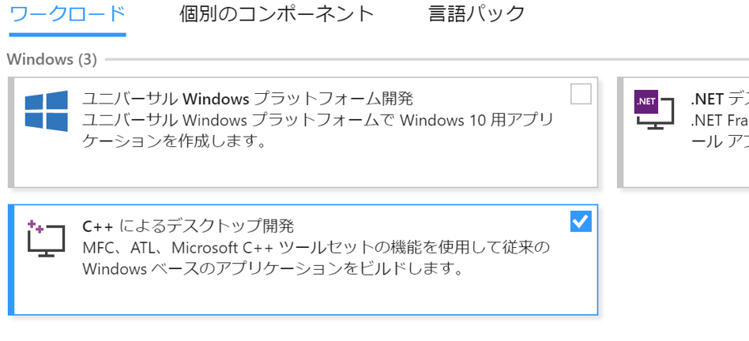
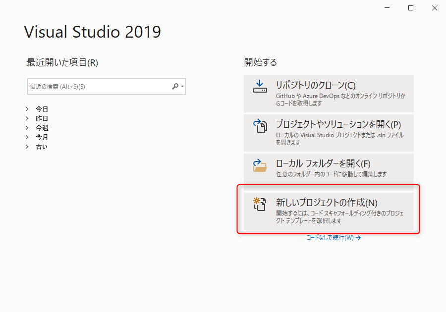
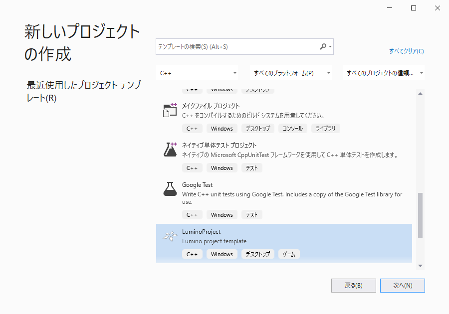

C++ で Lumino をはじめる
Note
このページでは Windows で開発を始める手順を説明しています。macOS についてはまだ書かれていません。
開発環境の準備を行う
Visual Studio をインストールする
- Visual Studio の Web ページ から Visual Studio 2019 Community をダウンロードし、インストールしてください。
- Visual Studio インストーラーを実行して C++ 開発ツール（C++ によるデスクトップ開発）をインストールします。 
Lumino をインストールする
- Lumino のインストーラ をダウンロードし、実行してください。インストーラの指示に従ってインストールを行います。
- 実行時に Windows SmartScreen の注意メッセージが表示された場合は「詳細情報」→「実行」を押してください。
プロジェクトを作成して実行する
- Visual Studio 2019 を起動し、 [新しいプロジェクトの作成] をクリックします。 
- プロジェクト テンプレートのリストから
LuminoProjectを選択し、 [次へ] をクリックします。  - プロジェクト名と保存場所を入力し、[作成] をクリックします。

- プロジェクトが作成され、サンプルプログラムが表示されます。
- [デバッグ] メニューの [デバッグの開始] からからプログラムを実行します。

中央に "Hello, Lumino!" と書かれたウィンドウが表示されましたか？
これで Lumino を使うための準備が整いました。次は チュートリアル に進みましょう！